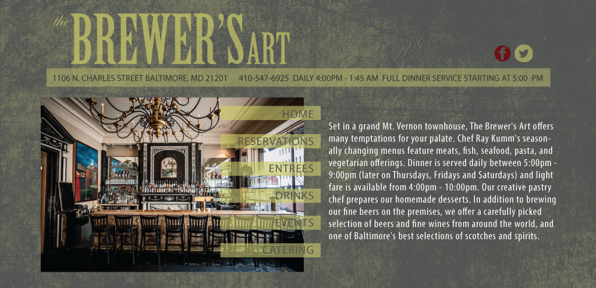

App Design
APP PROTOTYPE

Before / After
The assignment here was to redesign an existing restaurants website. The site could only be one page and needed to be responsive (this makes sense because a lot of people check out restaurant sites on mobile devices). I chose to work on Brewer's Art because I had been there before and they had a nice vibe and cool food. To capture their shabby-chiq atmosphere I created a grungy texture in Illustrator and paired it with a more sophisticated looking typeface, Birch STD.
Assuming most potential patrons would want to know the phone number, location and hours of the place, I put that information front and center. I used size and color to make a visible hierarchy in the menu sections and went from there. To finish it off, I added a jquery plug-in for smooth scrolling which is fun to watch do it's thing on such a long website.
THE RESEARCH PACKAGE

Before the designing process began, I had to do my research. I looked into cool websites of restaurants I had been to in Ann Arbor, MI (where I'm from) and put together the packet below.